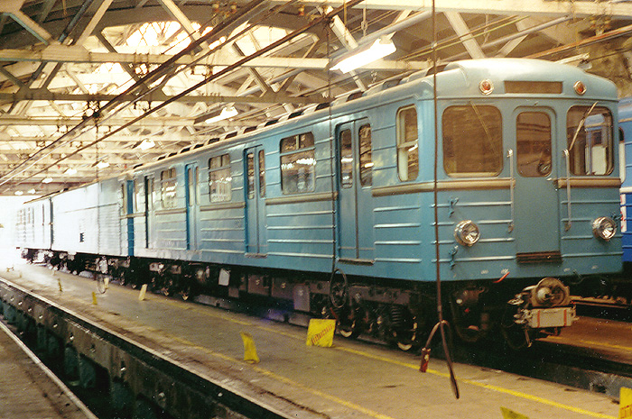
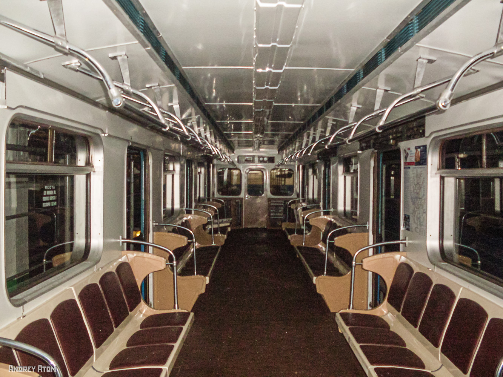
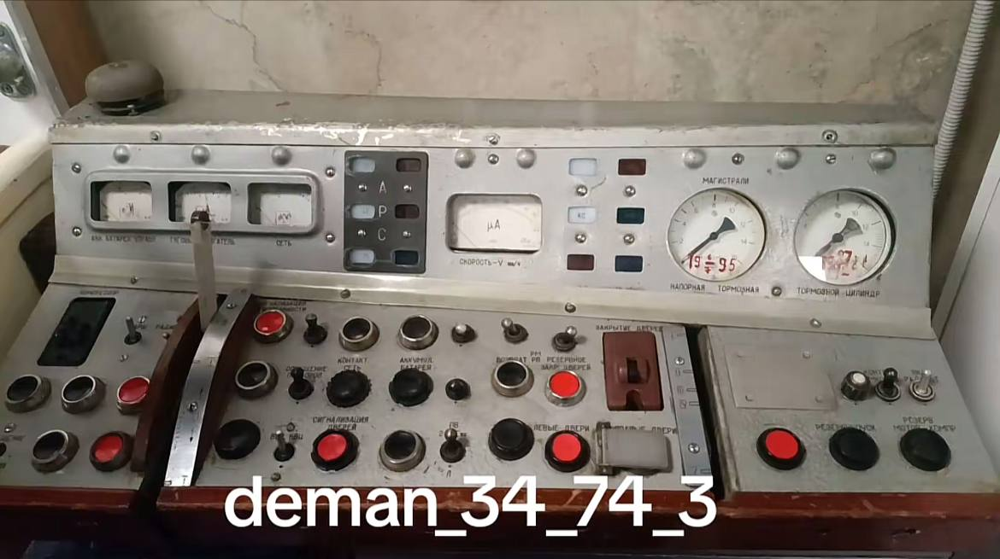
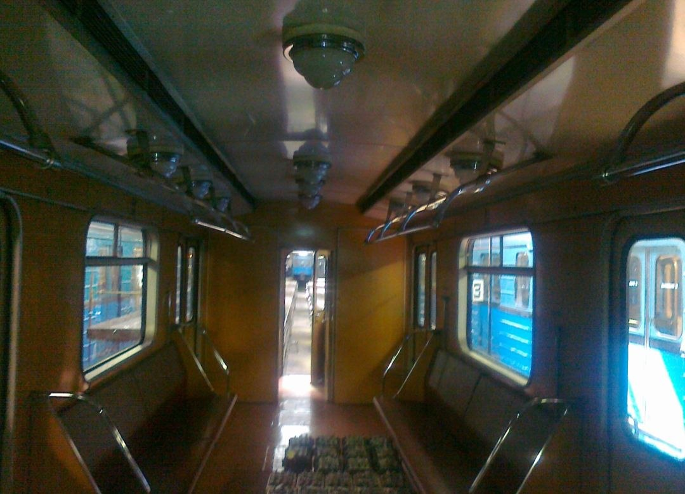
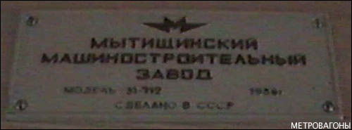

Вагоны типа Еж6
Еж6 (заводское обозначение — 81-712) — специальные головные вагоны, созданные на базе серийных Еж3 для работы в составе служебных поездов с контактно-аккумуляторными электровозами типа Л в системе подземных линий специального назначения Д6 (в 1990-е получившей известность как «Метро-2»).
Всего Мытищинским машиностроительным заводом было выпущено 10 вагонов Еж6 двумя партиями: шесть в 1973 году и четыре в 1986-м. Вагоны не имели салонных автоматических дверей в привычном смысле — это головные вагоны спецсоставов.
Назначение
В начале 1970-х годов возникла необходимость в специальном подвижном составе для системы подземных линий стратегического назначения Д6 в Москве и пригородах.
Отсутствие в системе Д6 контактного рельса требовало вагонов, способных работать как от аккумуляторных батарей, так и от контактного рельса. Автономное питание было необходимо во время нахождения в Д6, а питание от контактного рельса — для зарядки аккумуляторов и перемещения по линиям гражданского метро.
Схема состава: Еж6 + Л + Еж6 или Еж6 + Л + Л + Еж6, где Л — контактно-аккумуляторный электровоз (81-711), а Еж6 — головной вагон сопровождения.
Производство
Мытищинский машиностроительный завод под руководством главного конструктора А. Г. Акимова разработал проект специального подвижного состава на базе серийных Еж3. Были созданы две модификации: контактно-аккумуляторные электровозы Л (81-711) и пассажирские вагоны Еж6 (81-712).
| Параметр | Значение |
|---|---|
| Годы постройки | 1973 (первая партия), 1986 (вторая партия) |
| Страна постройки | СССР 🇷🇺 |
| Завод | Мытищинский машиностроительный (ныне «Метровагонмаш») |
| Вагонов построено | 10 (6 + 4) |
| Нумерация 1-й партии | 5580—5584, 5590 |
| Нумерация 2-й партии | 0090—0093 |
| База | Еж3 (81-710) |
| Совместимые электровозы | Л (81-711) |
Выпуск по годам
| Дата выпуска | Количество | Номера вагонов |
|---|---|---|
| 12.1973 | 6 | 5580—5584, 5590 |
| 1986 | 4 | 0090—0093 |
| Итого | 10 | — |
Важно: Вагоны первой партии (1973) имели единую нумерацию с серийными Еж3 и одинаковую с ними окраску. Вагоны второй партии (1986) получили нумерацию уже в ряду 81-717 и светло-синюю окраску.
Технические характеристики
| Параметр | Значение |
|---|---|
| Род тока и напряжение | 750 В постоянного тока |
| Типы вагонов | Головной (Мг) |
| Число вагонов в составе | Еж6 + 1..2×Л + Еж6 |
| Полная вместимость | служебная |
| Длина вагона | 19 210 мм |
| Ширина | 2 700 мм |
| Высота | 3 695 мм |
| Диаметр колёс | 780 мм |
| Ширина колеи | 1 520 мм |
| Масса тары | 31,7 т |
| Материал вагона | Сталь |
| Тип ТЭД | ДК-116А, коллекторные |
| Мощность ТЭД | 4 × 72 кВт |
| Макс. скорость | 90 км/ч (по контактному рельсу); 15 км/ч на аккумуляторном ходу |
| Системы безопасности | АЛС-АРС |
| Тормозная система | Электрическая, пневматическая |
Ключевые особенности
🚪 Дверь в лобовой части
Особые условия эксплуатации в Д6 требовали наличия двери в лобовой части кабины для входа и выхода в тоннель.
🎨 Две партии — две окраски
Первая партия — зелёно-синяя, как у Еж3. Вторая — светло-синяя, с белой декоративной полосой и тремя гофрами вместо двух.
💡 Освещение и сиденья
В вагонах 1986 года — лампы накаливания, как у Еж3, а сиденья — идентичны тем, что ставились на вагоны 81-717.
🔗 Совместимость
Вагоны Еж6 работают только с электровозами типа Л. Самостоятельно (без Л) они не эксплуатируются.
Конструкция
По конструкции Еж6 практически идентичны серийным Еж3. Основное отличие — наличие двери в лобовой части кабины и работа в составе с электровозами Л.
Отличия второй партии (1986)
- Выше центральной декоративной полосы — три гофрированных полосы жёсткости, а не две.
- Декоративная полоса выкрашена в белый цвет (у вагонов 1973 года — тёмная).
- Кузов — светло-синий, отличный от зелёно-синего первой партии и от синего с белыми полосами 81-717.
- Освещение салона — лампы накаливания, как у Еж3.
- Сиденья — идентичны тем, что ставились на 81-717.
Между заводом и Д6: после отправки с завода и до прибытия в Д6 новые вагоны некоторое время находились в депо «Сокол», где проходили окончательную наладку.
Ремонт и обслуживание
Периодически составы из вагонов Еж6 с электровозами Л по соединительной ветви, ведущей к третьему пути станции «Спортивная» (официально — оборотный тупик), проходят в систему Московского метро для подзарядки аккумуляторов и прохождения текущего и капитального ремонта.
Часто спецсоставы, заряжая аккумуляторы, стоят на той части соединительной ветви за «Спортивной», где есть контактный рельс (до гермоворот).
Ремонтные базы:
- Основная база — депо «Планерное».
- Капитальный ремонт — московский ЗРЭПС или ЗАО «Метровагонмаш» (Мытищи).
Судьба вагонов
В конце 1980-х годов 4 вагона Еж6 № 5581—5584 были переданы из Д6 в Московский метрополитен для работы на Ждановско-Краснопресненской (ныне Таганско-Краснопресненской) линии. В системе Д6 остались работать вагоны № 5580 и № 5590.
В 2003—2004 годах вагоны № 5581, 5583—5584 стояли в закрытом нефе депо «Новогиреево», ожидая модернизации и перевода в пассажирский парк. По состоянию на 2006 год в депо «Новогиреево» находились по крайней мере два вагона Еж6 1986 года выпуска, один из которых — № 0093.
Интересный факт: вагоны Еж6 стали последними в истории советского метростроения специальными головными вагонами, созданными на базе серийных Еж3 для работы в системе Д6. После них для этих целей использовались уже рельсовые автобусы РА1.
Список подвижного состава
Ниже — известные данные о вагонах Еж6 по состоянию на разные годы. Часть информации может быть неполной.
| № | Постр. | Приписка | Статус |
|---|---|---|---|
| 5580 | 12.1973 | Д6 | Списан |
| 5581 | 12.1973 | ТЧ-6 «Планерное» | Утилизирован 09.2017 |
| 5582 | 12.1973 | ТЧ-6 «Планерное» | Утилизирован 09.2020 |
| 5583 | 12.1973 | ТЧ-6 «Планерное» | Утилизирован 10.2021 |
| 5584 | 12.1973 | ТЧ-6 «Планерное» | Утилизирован 10.2020 |
| 5590 | 12.1973 | в/ч 95006 | Утилизирован 07.2010 |
| 0090 | 1986 | в/ч 95006 | Эксплуатируется |
| 0091 | 1986 | в/ч 95006 | Эксплуатируется |
| 0092 | 1986 | в/ч 95006 | Списан 2009 г. |
| 0093 | 1986 | в/ч 95006 | Списан 2009 г. |
Фотогалерея

Спецсостав в депо ТЧ-6

Салон после стандартной модернизации.

В кабине машиниста.

Внутреннее убранство.

Внутри вагона Еж6 №0090, над дверью в кабину.

Нажмите на фото для увеличения
«Еж6 — вагоны-невидимки. Большую часть жизни они провели в системе, о которой официально не говорили, а теперь о них напоминают лишь несколько фотографий и таблиц. Но именно они обеспечивали работу того самого „Метро-2“, о котором до сих пор ходят легенды».